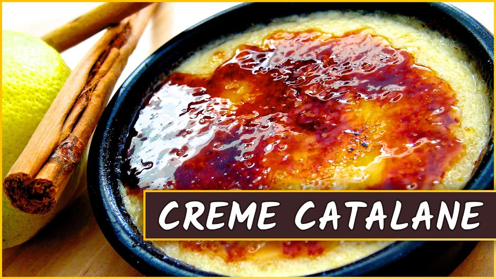

crème | Crossword Clues
- Tatafred (@Tatafred1) • Twitter
Die Creme in kleine Förmchen füllen und mindestens 2 Stunden kühlen. Beeren mit Vanillezucker sowie dem restlichen Kirschwasser marinieren und durch ein Sieb passieren. Die Förmchen auf Teller stürzen, passierte Beeren als Fruchtspiegel um die Bayerische Creme geben und mit frischen Erdbeeren, Himbeeren und jeweils einem Minzeblatt garnieren. - ᐅᐅNoreva Exfoliac Getönte Creme • Die momentan populärsten ...
Gesichtscreme selber machen: So können Sie eine Hyaluronsäure-Creme selber mac… ist auch eine der beliebtesten Kategorien auf Pinterest, wie hautpflege produkte selber machen und andere. Daher denke ich, dass mein Profil für Leute sehr nützlich sein wird, die Schlussfolgerungen zu diesen Kategorien von Hautpflege Selber Machen und ... - Nanovein Premium Creme kaufen → €29.00 [Top Angebot] – baaboo
Nanovein Premium günstig kaufen - Preisvergleich. Die Creme Nanovein Premium bekommst Du zum einen über den Hersteller (€39.00) über einige Händler auf eBay (bis zu €51.89) oder direkt hier bei baaboo für (€29.00).Wir bei baaboo haben zur Zeit nicht nur einen günstigen Preis sondern bieten Nanovein Premium auch in der Größe 75 ml statt 50 ml an. Ein Top Angebot! - Kokosöl Creme gegen Schuppenflechte selber machen - Rezept ...
Welche Kriterien es beim Bestellen seiner Noreva Exfoliac Getönte Creme zu beurteilen gibt! Zudem hat unser Team schließlich eine hilfreiche Checkliste als Entscheidungshilfe gesammelt - Damit LSF 20 - Durch den Lichtschutzfaktor 20 schützt die getönte Feuchtigkeitscreme vor äußeren Einflüssen und lichtbedingter Sie zu Hause unter all den Noreva Exfoliac Getönte Creme der Noreva ... - Cremeataston (@Cremeataston) • Twitter
Creme gegen Gel Obwohl wir sowohl Creme als auch Gel verwenden, um sie auf unseren Körper aufzutragen, gibt es einen Unterschied zwischen ihnen. Es gibt viele Arten von Schönheits- und Hautpflegeprodukten auf dem Markt, die in Form von Cremes, Lotionen, Gelen und Salben erhältlich sind. - Les Vitalities Creme - Bewertungen, Preis und Bezugsquellen?
Nivea Creme Soft Flüssigseife, 250 ml Extra-reichhaltig mit Mandelöl Schützt die Hände vor dem Austrocknen pH-hautneutral Hautverträglichkeit dermatologisch bestätigt Entdecken Sie die intensive Pflege von NIVEA MPN:80700 Cashmere Moments Milde Cremeseife mit Cashmere-Proteinen und Orchideenduft. - Nivea Creme soft Flüssigseife 250ml günstig kaufen ...
We would like to show you a description here but the site won’t allow us. - Neck Creme Anti Aging Falten Entfernung Creme Bleichen ...
LE LIFT La Crème Main ist wie eine Anti-Aging-Pflege konzipiert und bewahrt das jugendliche Aussehen der Hände, denn meist sind an ihnen die ersten Altersanzeichen zu erkennen. Die Formel verbindet die Kraft eines botanischen Alfalfa-Konzentrats, so leistungsstark wie Retinol* und dabei sanft zur ... - Herren-Schleife stilsichere Seide creme | Einstecktuch.com
Kokosöl Creme gegen Schuppenflechte selber machen – Rezept & Anleitung Kokosöl Kosmetik selber machen – Rezept für selbst gemachte Kokosöl... - Candidol Creme | Kampf gegen Mykose und Pilz um die Füße
Hydro Creme - mit Anti Aging Effekt Schütze Deine Haut vor Umwelteinflüssen und spende ihr genügend Feuchtigkeit. Angereichert mit Q10 und Hyaluronsäure sagt die feuchtigkeitsspendende HydroCreme der Hautalterung und den unliebsamen Falten dem Kampf an... Für ein schönes, frisches Hautbild mit mehr Spannkraft und Elastizität!

Crossword Solver Crossword Solver Popular Clues A-Z Q & A Add clues Add a new clue Review new clues Anagrams Word Game Crossword Clues Solver
crème (Crossword)
We didn't find an exact match for “Crème” but these clues may be related:
Crème de la crème (5 words, e.g. A-LIST) Creme --- creme ( = DELA) We didn't find answers to the clue “Crème” but we did find clues where “Crème” could be the answer: --- brulee --- de menthe Best part, in Paris Br l or caramel Chocolate center Coffee enhancer, in Paris Cookie filling Cordial introduction Cream Dessert filling Ding Dong filler Double Stuf stuff Doughnut filler Drink, --- de menthe Éclair filler Eclair filling Food topping French menu item French word used in English French word in the English language Goes with some liqueurs Heart of an Oreo It`s before and after de la Lait topper Liqueur category Liqueur type Liqueur word Middle of an Oreo Napoleon`s filler One of a class of liqueurs of a rather thick consistency Oreo center Oreo filler Oreo filling Oreo innards Oreo layer Oreo`s center Oreo`s filling Pastry filler Pastry filling Sandwich cookie filling Smooth liqueur Stuff in a Double Stuf Sweet liqueur Sweet, thick liqueur Syrupy liqueur Teens` magazine Term in French cookery Thick liqueur Thick sweet liqueur Thickish liqueur Twinkie filler Twinkie filling Twinkie`s filling White sauce: Fr Word before and after `de la` Word of either side of de la Word on either side of `de la` Word with de menthe Yummy fillingThese clues may also be related:
Crispy creme treat ( = OREO) Cremey snacks ( = OREOS) Cremerie ( = SHOP) Creme/creme insert ( = DELA) Creme/creme filling ( = DELA) Creme-y snack ( = OREO) Creme-filled treats ( = DRAKE'S DEVIL DOGS) Creme-filled treat ( = OREO) Creme-filled snacks ( = OREOS) Creme-filled snack ( = OREO)Definitions of “crème” If the answer you seek is not in the answers above these definitions may help solving your crossword puzzle.
• (krehm) - It is the French word for "cream
• A term used esp. in cookery, names of liqueurs, etc
• It also is the cream-like foam on top of a well-made espresso
• One of a class of liqueurs of a rather thick consistency
• Commission Régionale d'Évaluation Médicale des Établissements
• Refers to custard like (such as caramel custard) pudding
• (magazine) Creme is monthly New Zealand magazine for girls aged 10 - 18
• A term used to distinguish those liqueurs, usually French that have an unusual amount of sweetness
More crossword answers Are you looking for more answers, or do you have a question for other crossword enthusiasts? Use the “ Crossword Q & A ” community to ask for help.
If you haven't solved the crossword clue crème yet try to search our Crossword Dictionary by entering the letters you already know! (Enter a dot for each missing letters, e.g. “P.ZZ..” will find “PUZZLE”.)
Also look at the related clues for crossword clues with similar answers to “crème”
Contribute to Crossword Clues
You can help others by contributing to our crossword dictionary. Help expand our database by adding clues or reviewing them . Other crossword enthusiasts will be very grateful for your research! Possibly related clues Creme --- creme (1) Creme brulee base (1) Crème brûlée cousin (1) Crème brûlée topping (1) Creme brulee utensil (1) Creme brulee, for one (1) Crème caramel (1) Crème caramel`s spanish cousins (1) Creme container (1) Creme cookie (1) Creme cookies (1) Creme de cassis cocktail (1) Crème de la crème (5) Creme de menthe concoction (1) Creme Egg maker (1) Crème flavorer (1) Creme Fraiche`s jockey: Belmont, ... (1) Creme of 10cc (1) Creme sandwich (1) Creme Sandwich cookie (1) Creme treat (1) Creme`s kin (1) Creme`s place, in an Oreo (1) Creme-centered snack (1) Creme-centered treat (1) Creme-creme center (1) Creme-creme filling (1) Creme-creme link (1) Crème-crème linkup (1) Creme-filled cake (1) Creme-filled chocolate cookie (1) Creme-filled chocolate snack (1) Creme-filled chocolate treats (1) Creme-filled cookie (1) Creme-filled cookie from Nabisco (1) Creme-filled cookies (1) Creme-filled munchies (1) Creme-filled sandwich (1) Creme-filled snack (1) Creme-filled snacks (1) Creme-filled treat (1) Creme-filled treats (1) Creme-y snack (1) Creme/creme filling (1) Creme/creme insert (1) Cremerie (1) Cremey snacks (1) Recent clues The number of answers is shown between bracketsKhan`s subject (1) Bourgeois sculpture (1) Racetrack circuits (1) Prior nights (1) Why you little! (1) Adolescent, for one (1) Examples (1) One who benefits (1) He was Smart (1) Long in the tooth (6) Bruce cation`s muse (1) Guitar device (1) Enrapture (7) Evening abroad (1) Knot in cotton (1)
About us CrosswordClues.com is a free Crossword Solver tool. Use our tool to solve regular crosswords, find words with missing letters, solve codeword puzzles or to look up anagrams. Compete with others in a little game of `Crossword Boss`. Also on this Site CrosswordBoss Game Anagrams Popular Add a clue Review a clue Q&A
On Encyclo.co.uk
Starts with Ends with Contains Blogs FAQ
History of Crossword Puzzles
Crossword Records
What types of Crossword Puzzles are there?
What is a Crossword Puzzle?
Common Crossword Puzzle Answers
Proud to welcome thousands of cruciverbalists every day! CrosswordClues.com © 2020 | Privacy | Contact & info | Choose a name
